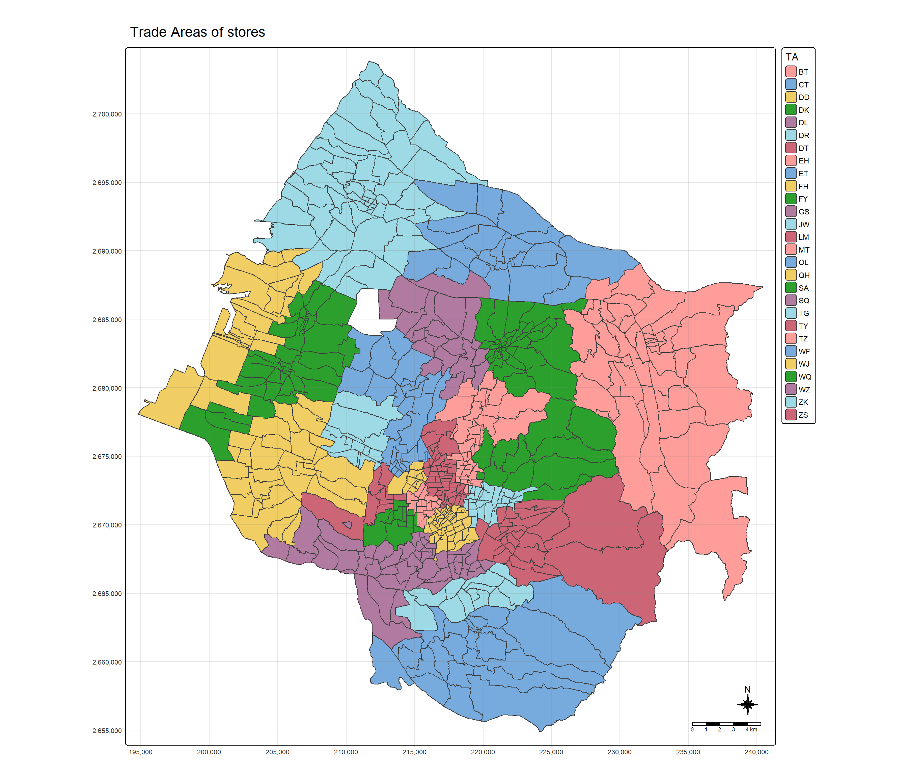
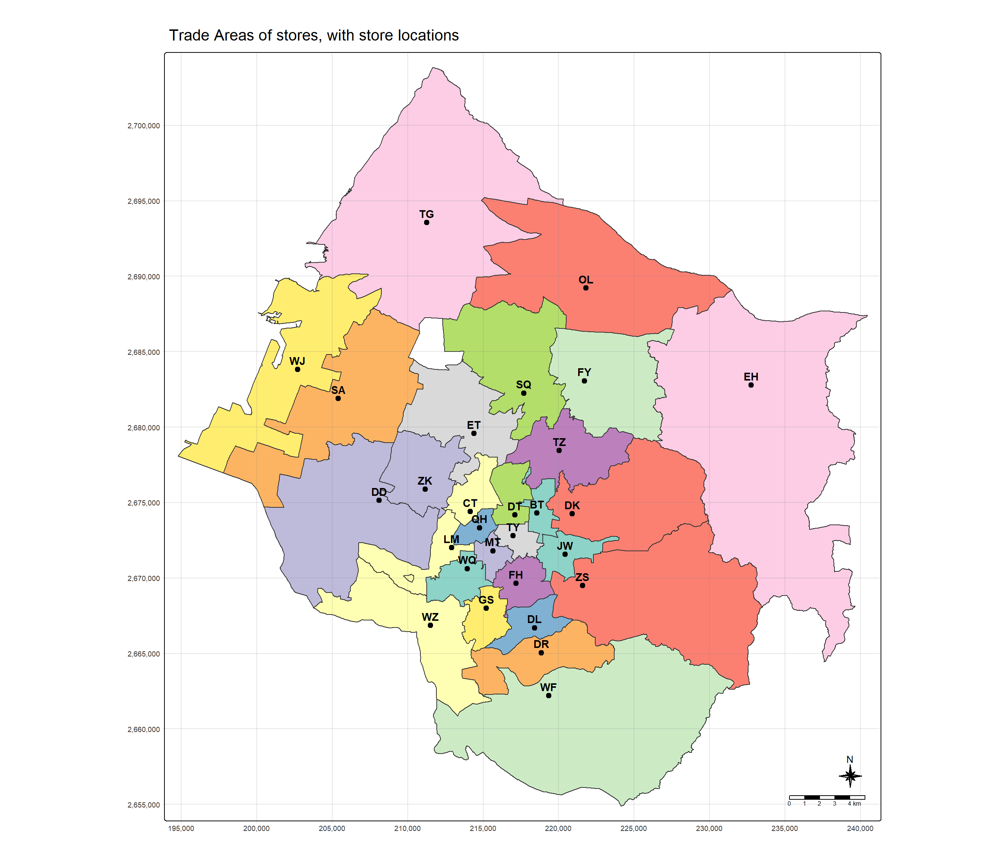
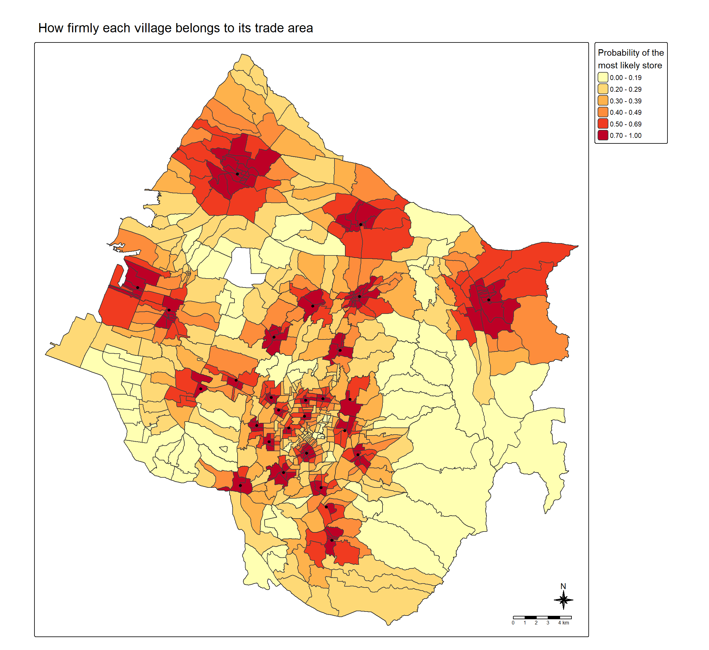
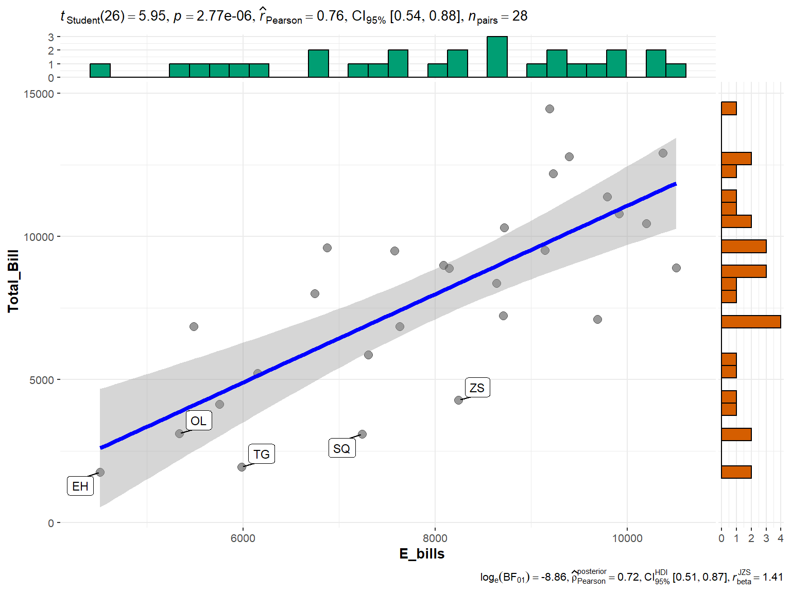
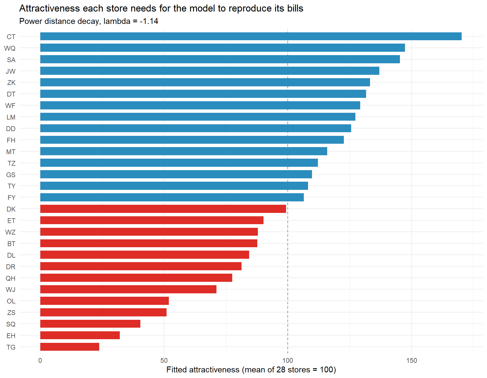
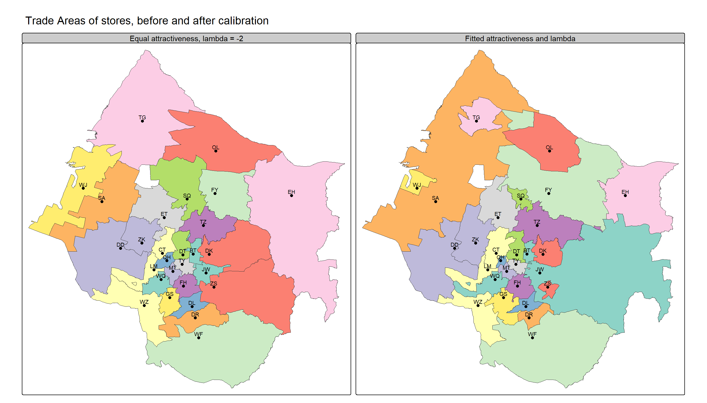

pacman::p_load(sf, tidyverse, MCI, tmap, ggstatsplot)In-class Exercise 8: Trade Areas and Calibration of the Huff Model
Overview
Hands-on Exercise 8 followed Chapter 18 of the textbook through the MCI route: a distance matrix from village centroids to the 28 stores, a long interaction matrix, Huff probabilities from huff.shares(), the trade area of a single store (BT), expected customers from shares.total() set against actual sales, and the probabilities pivoted to wide form. It also showed that with every store given the same attractiveness, each village’s most probable store is simply its nearest one, and that the default distance decay of λ = −2 fits the sales worse than a gentler one.
Lesson 8 takes the analysis past the point where the chapter stops, in two directions:
- Trade areas of all stores at once. The wide table built at the end of the chapter is used to find, for every village, the store it is most likely to patronise, and the result is mapped as one trade-area map for the whole network.
- Calibrating the model against the sales data. Instead of accepting λ = −2 and an attractiveness of 100 for every store, λ is estimated from the stores’ observed totals with
huff.lambda(), and the attractiveness of each store is then fitted withhuff.fit(). The calibrated model is mapped and compared with the uncalibrated one.
The object names follow those used in the lesson’s demonstration: ijMatrix, huff_share, huff_share_wider, huff_TA, huff_TA_tidied, village_TA, dist_lambda and ijMatrix1.
Hands-on 练习 8 沿教材第 18 章的 MCI 路线完成了：从村里中心点到 28 家门店的距离矩阵、长格式交互矩阵、huff.shares() 计算的 Huff 概率、单家门店（BT）的商圈、shares.total() 得到的预期顾客数与实际销售额的对照，以及把概率透视为宽表。它还说明了两点：当每家店的吸引力都相同时，每个村里最可能光顾的门店就是离它最近的那一家；而默认的距离衰减 λ = −2 对销售额的拟合，不如更平缓的衰减。
第 8 讲把分析推进到教材止步之处之外，分两个方向：
- 一次画出所有门店的商圈。 用教材最后构建的宽表，为每个村里找出它最可能光顾的门店，并把结果画成覆盖整个门店网络的一张商圈图。
- 用销售数据校准模型。 不再接受 λ = −2 和每家店吸引力都为 100 的设定，而是用
huff.lambda()从门店的观测总量估计 λ，再用huff.fit()拟合每家店的吸引力。校准后的模型会被绘制出来，并与未校准的模型比较。
对象名沿用课上演示所用的名称：ijMatrix、huff_share、huff_share_wider、huff_TA、huff_TA_tidied、village_TA、dist_lambda 与 ijMatrix1。
Getting Started
| Package | Role |
|---|---|
| sf | Importing the layers and computing the village-store distance matrix |
| tidyverse | Joining, pivoting and summarising the tables |
| MCI | huff.shares(), shares.total(), huff.lambda() and huff.fit() |
| tmap | The trade-area maps |
| ggstatsplot | Testing expected against observed store totals |
Inputs Carried Over from Hands-on Exercise 8
Importing the three layers and the two tables, aggregating the sales by store, joining them onto the stores, removing the dash from the village codes in pop2019, dropping the five villages without population, building the distance matrix from village points-on-surface and reshaping it into the long interaction matrix were all explained in Hands-on Exercise 8. The code is repeated only so that this document runs on its own. The interaction matrix is named ijMatrix here, as in the lesson, rather than the chapter’s interaction_matrix. The district layer is not imported, since no step below uses it.
导入三个图层与两张表、按门店汇总销售额并连接到门店图层、去掉 pop2019 村里代码中的连字符、删去五个没有人口的村里、以村里面内点构建距离矩阵并整形为长格式交互矩阵，这些都已在 Hands-on 练习 8 中讲过。这里重复代码只是为了让本文档可以独立运行。交互矩阵沿用课上的名称 ijMatrix，而不是教材的 interaction_matrix。行政区图层没有导入，因为下文没有任何一步用到它。
stores <- st_read(dsn = "data/geospatial",
layer = "STORES_TC", quiet = TRUE)
village <- st_read(dsn = "data/geospatial",
layer = "VILLAGE_TC", quiet = TRUE)
pop2019 <- read_csv("data/aspatial/pop2019.csv",
show_col_types = FALSE)
store_sales <- read_csv("data/aspatial/Store_sales_data.csv",
show_col_types = FALSE)
store_sales_aggre <- store_sales %>%
group_by(`Store Code`) %>%
summarise(Total_Bill = sum(Bills, na.rm = TRUE),
Total_Sales = sum(Amount, na.rm = TRUE))
stores <- stores %>%
left_join(store_sales_aggre,
by = join_by(Store_CD == `Store Code`)) %>%
mutate(Store_size = 100)
pop2019 <- pop2019 %>%
mutate(V_ID = str_remove_all(V_ID, "-"))
village <- village %>%
left_join(pop2019, by = join_by(VILLCODE == V_ID)) %>%
filter(!is.na(P_CNT))
village_center <- st_point_on_surface(village)
distmat <- st_distance(village_center, stores)
rownames(distmat) <- village$VILLCODE
colnames(distmat) <- stores$Store_CD
distmat_long <- distmat %>%
as.data.frame() %>%
rownames_to_column(var = "VILLCODE") %>%
pivot_longer(cols = -VILLCODE,
names_to = "Store_CD",
values_to = "distance") %>%
mutate(distance = as.numeric(distance))
ijMatrix <- distmat_long %>%
left_join(stores %>%
st_drop_geometry() %>%
select(Store_CD, Store_size),
by = "Store_CD") %>%
relocate(distance, .after = last_col())
huff_share <- huff.shares(ijMatrix, "VILLCODE", "Store_CD",
"Store_size", "distance")
c(villages = nrow(village), stores = nrow(stores), pairs = nrow(ijMatrix))villages stores pairs
617 28 17276 Trade Areas of All Stores
From long to wide
huff_share has one row for every village-store pair, 17,276 in all. The chapter’s last step pivots it so that each village is one row and each store one column of probabilities, which puts all 28 competing probabilities for a village side by side:
huff_share 每行是一个村里—门店组合，共 17,276 行。教材的最后一步把它透视为：每个村里一行、每家门店一列概率，这样一个村里面对的 28 个竞争概率就并排放在同一行里：
huff_share_wider <- huff_share %>%
select(VILLCODE, Store_CD, p_ij) %>%
pivot_wider(names_from = Store_CD,
values_from = p_ij)
huff_share_wider[1:5, 1:8]# A tibble: 5 × 8
VILLCODE BT CT DD DK DL DR DT
<chr> <dbl> <dbl> <dbl> <dbl> <dbl> <dbl> <dbl>
1 66000010001 0.0349 0.0178 0.00437 0.0221 0.0331 0.0161 0.0371
2 66000010002 0.0389 0.0214 0.00473 0.0217 0.0270 0.0138 0.0456
3 66000010003 0.0313 0.0161 0.00412 0.0207 0.0352 0.0166 0.0326
4 66000010004 0.0307 0.0170 0.00409 0.0187 0.0291 0.0142 0.0342
5 66000010005 0.0348 0.0193 0.00445 0.0202 0.0281 0.0141 0.0398huff_TA: the most probable store for each village
A village’s trade-area store is the column in which its row reaches its maximum. max.col() returns that column’s position for every row at once, and its name is the store code. The highest probability itself is kept as well, because it says how firmly the village belongs to that store:
一个村里归属的商圈门店，就是它那一行取到最大值的那一列。max.col() 一次性返回每一行最大值所在列的位置，该列的列名就是门店代码。最大概率本身也一并保留，因为它说明这个村里归属于该门店的牢固程度：
prob_cols <- huff_share_wider %>% select(-VILLCODE)
huff_TA <- huff_share_wider %>%
mutate(TA = names(prob_cols)[max.col(as.matrix(prob_cols),
ties.method = "first")],
p_max = apply(prob_cols, 1, max))
huff_TA %>% select(VILLCODE, TA, p_max) %>% head()# A tibble: 6 × 3
VILLCODE TA p_max
<chr> <chr> <dbl>
1 66000010001 FH 0.399
2 66000010002 FH 0.309
3 66000010003 FH 0.444
4 66000010004 FH 0.442
5 66000010005 FH 0.374
6 66000010006 FH 0.279ties.method = "first" only matters if two stores tie exactly for a village, which does not happen with continuous distances, but the default of "random" would otherwise make the result change from one run to the next.
ties.method = "first" 只在两家店对某个村里的概率完全相等时才起作用；距离是连续值，这种情况不会出现。但默认的 "random" 在出现并列时会让结果每次运行都不同，所以这里写明。
huff_TA_tidied
Only the village code, the trade-area store and its probability are needed for mapping, so the 28 probability columns are dropped, and each store’s number of villages and residents is summarised:
绘图只需要村里代码、商圈门店及其概率，因此去掉 28 列概率，并汇总每家门店的村里数与居民数：
huff_TA_tidied <- huff_TA %>%
select(VILLCODE, TA, p_max)
TA_summary <- huff_TA_tidied %>%
left_join(village %>%
st_drop_geometry() %>%
select(VILLCODE, P_CNT),
by = "VILLCODE") %>%
group_by(TA) %>%
summarise(villages = n(),
residents = sum(P_CNT),
median_p_max = round(median(p_max), 3)) %>%
arrange(desc(residents))
TA_summary# A tibble: 28 × 4
TA villages residents median_p_max
<chr> <int> <dbl> <dbl>
1 FY 36 157239 0.678
2 SA 40 155947 0.36
3 DD 30 148393 0.214
4 BT 23 134771 0.426
5 JW 23 131763 0.368
6 TG 54 131499 0.521
7 FH 38 131410 0.386
8 DT 20 119962 0.435
9 DL 15 118522 0.462
10 ZS 25 112485 0.396
# ℹ 18 more rowsEvery one of the 28 stores is the most probable choice somewhere, so none of them is entirely overshadowed by its neighbours. The trade areas are very unequal, though. FY serves the most residents, 157,239 in 36 villages, and LM the fewest, 57,631 in 9. TG has the most villages, 54, which reflects the large, thinly populated villages at the edge of the city more than a large market.
28 家门店中，每一家都至少在某处是最可能被光顾的选择，所以没有哪一家被邻近门店完全遮蔽。不过各商圈很不均衡。FY 服务的居民最多，在 36 个村里中共 157,239 人；LM 最少，在 9 个村里中共 57,631 人。TG 的村里数最多，为 54 个，这更多反映了城市边缘那些面积大、人口稀的村里，而不是一个大市场。
Mapping the trade areas
The tidied table is joined back onto the village polygons, and the trade areas are mapped with the same layout elements as the lesson: a frame, a compass rose, a scale bar and a faint grid.
把整理好的表连接回村里多边形，再用与课上相同的版面元素绘制商圈：边框、指北针、比例尺与淡淡的经纬网。
village_TA <- village %>%
left_join(huff_TA_tidied, by = "VILLCODE")tm_shape(village_TA) +
tm_polygons(fill = "TA") +
tm_title("Trade Areas of stores") +
tm_layout(frame = TRUE) +
tm_borders(fill_alpha = 0.5) +
tm_compass(type = "8star", size = 2) +
tm_scalebar() +
tm_grid(alpha = 0.2)
With 28 categories the default categorical palette cannot give every store a distinct colour, so adjacent trade areas sometimes share one and the legend cannot be matched to the map by eye. Adding the stores themselves as labelled points makes each area identifiable, and dissolving the villages into one polygon per store draws the boundaries between trade areas rather than between villages:
有 28 个类别时，默认的分类调色板无法给每家店一种独特的颜色，所以相邻的商圈有时会同色，图例也无法靠肉眼与地图对应。把门店本身作为带标签的点加上，就能辨认每一个商圈；再把村里按门店融合为一个多边形，画出的就是商圈之间、而不是村里之间的边界：
TA_boundary <- village_TA %>%
group_by(TA) %>%
summarise(.groups = "drop")
tm_shape(village_TA) +
tm_polygons(fill = "TA",
fill.scale = tm_scale_categorical(values = "brewer.set3"),
col = NULL,
fill.legend = tm_legend(show = FALSE)) +
tm_shape(TA_boundary) +
tm_borders(col = "grey20", lwd = 1.2) +
tm_shape(stores) +
tm_dots(size = 0.5, fill = "black") +
tm_text("Store_CD", size = 0.9, ymod = 0.7, fontface = "bold") +
tm_title("Trade Areas of stores, with store locations") +
tm_layout(frame = TRUE) +
tm_compass(type = "8star", size = 2) +
tm_scalebar() +
tm_grid(alpha = 0.2)
As Hands-on Exercise 8 established, with equal attractiveness these trade areas are exactly the nearest-store regions, so the boundaries fall roughly midway between neighbouring stores. The dense cluster of stores in the city core divides it into many small trade areas, while the few stores on the edge of the city, EH in the eastern hills at Dongshi, TG on the northern coast at Dajia and SA at Shalu on the western coastal plain, each command a large area of hill or coastal villages.
正如 Hands-on 练习 8 所示，在吸引力相同时，这些商圈恰好就是「最近门店区域」，所以边界大致位于相邻两店的中点。市区核心门店密集，被分割成许多小商圈；而城市边缘少数几家店，即东部山区东势的 EH、北部沿海大甲的 TG，以及西部海岸平原沙鹿的 SA，各自统辖一大片山区或沿海村里。
How contested is each village?
The trade-area map hides how close each contest is. A village whose winning store has a probability of 0.9 belongs firmly to it, while one at 0.1 is split among many stores and only nominally assigned. Mapping p_max shows where the boundaries are soft:
商圈图掩盖了每一场竞争有多接近。一个村里的胜出门店概率为 0.9，说明它牢牢属于该店；为 0.1 则说明它被许多门店瓜分，只是名义上归属。绘制 p_max 可以看出边界在哪里是柔软的：
tm_shape(village_TA) +
tm_polygons(fill = "p_max",
fill.scale = tm_scale_intervals(
breaks = c(0, 0.2, 0.3, 0.4, 0.5, 0.7, 1),
values = "brewer.yl_or_rd"),
fill.legend = tm_legend(
title = "Probability of the\nmost likely store")) +
tm_shape(TA_boundary) +
tm_borders(col = "grey20", lwd = 1) +
tm_shape(stores) +
tm_dots(size = 0.3, fill = "black") +
tm_title("How firmly each village belongs to its trade area") +
tm_layout(frame = TRUE) +
tm_compass(type = "8star", size = 2) +
tm_scalebar()
The median village gives its most likely store a probability of 0.41, and 61% of villages give it less than one half, so in most of the city no single store holds a majority of the expected patronage. The firm villages, dark red, are those containing or right next to a store; around the stores on the edge of the city, such as TG and OL in the north, EH in the east and WF in the south, that firm zone reaches several villages out. The contested villages, pale yellow, are of two kinds. In the city core many stores are close together, so no single one dominates. In the large hill villages of the east and south-east, and on the western plain between the coastal stores and the city, every store is far away, and with a power decay several stores at, say, 10 and 12 km receive similar shares. A trade-area boundary on the previous map is therefore firm only near a store: across the hills and the core, the colour a village was given says little about where its residents are expected to shop.
村里对其最可能门店的概率中位数为 0.41，61% 的村里不到一半，所以在城市的大部分地方，没有哪一家店能拿到过半的预期客流。牢固的村里（深红色）是那些内含门店或紧邻门店的村里；在城市边缘的门店周围，例如北部的 TG 与 OL、东部的 EH 和南部的 WF，这片牢固的范围会向外延伸好几个村里。竞争激烈的村里（浅黄色）有两类。一类在市区核心，那里门店密集，没有哪一家能占主导。另一类是东部与东南部面积很大的山区村里，以及沿海门店与市区之间的西部平原，那里离每家店都很远；在幂函数衰减下，相距 10 公里与 12 公里的几家门店得到的份额相差不大。因此，上一张图上的商圈边界只在门店附近才是牢固的：在山区和市区核心，一个村里被涂成哪种颜色，几乎说明不了模型预期那里的居民去哪里购物。
Calibrating the Huff Model against Store Sales
What the model can be calibrated against
The model so far rests on two assumed numbers: λ = −2 for every village and an attractiveness of 100 for every store. Calibration replaces both with values estimated from the data. The ideal data would record where each store’s customers live, so that predicted and observed probabilities could be compared village by village. The sales file does not do that: its POD code field holds point-of-sale codes such as F-03, not village codes. What it does give is each store’s total, and MCI has two functions that fit a Huff model to totals alone: huff.lambda() estimates λ, and huff.fit() estimates the attractiveness of each store.
Both need the observed total of each store and the market potential of each village, in the same units. The number of bills is used as the observed total rather than the sales amount. A Huff model allocates customers, and a bill is one customer transaction, whereas the amount also depends on how much each customer spends. The market potential is the village population scaled so that the city as a whole generates exactly as many bills as the 28 stores recorded. This assumes that every resident uses the network at the same rate and that every bill comes from one of the 617 villages.
到目前为止，模型建立在两个假定的数字上：所有村里的 λ = −2，所有门店的吸引力都是 100。校准就是用从数据中估计出的数值替换这两者。理想的数据会记录每家店的顾客住在哪里，这样就能逐个村里比较预测概率与观测概率。销售文件做不到这一点：它的 POD code 字段是 F-03 之类的销售点代码，而不是村里代码。它提供的是每家店的总量；MCI 有两个函数可以仅凭总量来拟合 Huff 模型：huff.lambda() 估计 λ，huff.fit() 估计每家店的吸引力。
两者都需要每家店的观测总量以及每个村里的市场潜力，并且单位要一致。这里用单数而不是销售额作为观测总量。Huff 模型分配的是顾客，一张单据就是一次顾客交易；而金额还取决于每位顾客花多少钱。市场潜力取村里人口，并按比例缩放，使全市产生的单数恰好等于 28 家门店记录的单数。这隐含两个假设：每位居民使用这个门店网络的频率相同，以及每一张单据都来自这 617 个村里之一。
store_obs <- stores %>%
st_drop_geometry() %>%
select(Store_CD, Total_Bill, Total_Sales)
bills_per_resident <- sum(stores$Total_Bill) / sum(village$P_CNT)
village_market <- village %>%
st_drop_geometry() %>%
transmute(VILLCODE,
demand = P_CNT * bills_per_resident)
c(total_bills = sum(store_obs$Total_Bill),
residents = sum(village$P_CNT),
bills_per_resident = round(bills_per_resident, 4)) total_bills residents bills_per_resident
224585.0000 2804359.0000 0.0801 The 28 stores recorded 224,585 bills against 2,804,359 residents, about 0.08 bills per resident. Without the scaling, the expected totals would be about 12.5 times the observed ones whatever λ is, and the fit would be driven by a difference of scale that no value of λ can remove.
28 家门店共记录了 224,585 张单据，对应 2,804,359 位居民，约每位居民 0.08 张。若不做缩放，无论 λ 取何值，预期总量都约为观测值的 12.5 倍，拟合会被一个任何 λ 都无法消除的尺度差异所主导。
dist_lambda: estimating λ with huff.lambda()
huff.lambda() searches for the λ at which the sum of squared differences between expected and observed store totals is smallest. With method = "bisection" it halves the search interval at each iteration, here starting from −0.5 and −3. Its default output is a list holding γ and the fitted λ:
huff.lambda() 搜寻使「预期门店总量与观测门店总量之差的平方和」最小的 λ。method = "bisection" 表示每次迭代把搜索区间减半，这里从 −0.5 与 −3 开始。它的默认输出是一个包含 γ 与拟合 λ 的列表：
dist_lambda <- huff.lambda(ijMatrix, "VILLCODE", "Store_CD",
"Store_size", "distance",
gamma = 1, atype = "pow",
lambda_startv = -0.5, lambda_endv = -3,
dtype = "pow",
localmarket_dataset = village_market,
origin_id = "VILLCODE",
localmarket = "demand",
location_dataset = store_obs,
location_id = "Store_CD",
location_total = "Total_Bill",
method = "bisection", iterations = 10)dist_lambda$gamma
[1] 1
$lambda
[1] -1.14209The same call with output = "iterations" shows how the search converged:
同一调用加上 output = "iterations"，可以看到搜索是如何收敛的：
lambda_iter <- huff.lambda(ijMatrix, "VILLCODE", "Store_CD",
"Store_size", "distance",
gamma = 1, atype = "pow",
lambda_startv = -0.5, lambda_endv = -3,
dtype = "pow",
localmarket_dataset = village_market,
origin_id = "VILLCODE",
localmarket = "demand",
location_dataset = store_obs,
location_id = "Store_CD",
location_total = "Total_Bill",
method = "bisection", iterations = 10,
output = "iterations")lambda_iter Iteration Lambda
1 1 -1.750000
2 2 -1.125000
3 3 -1.437500
4 4 -1.281250
5 5 -1.203125
6 6 -1.164062
7 7 -1.144531
8 8 -1.134766
9 9 -1.139648
10 10 -1.142090The search settles at λ = -1.14, a much gentler decay than the default of −2. It agrees with the sensitivity check in Hands-on Exercise 8, where the correlation with sales rose as λ moved from −2 towards −1, but it now comes from an explicit fit rather than from five trial values.
One practical point about MCI: each function checks its data arguments with exists(as.character(substitute(...))), so a data frame must be passed as a named object. An inline expression such as village %>% transmute(...) in the localmarket_dataset argument fails with “first argument has length > 1”, and inside a user-written function an argument fails with “Dataset … not found” unless check_df = FALSE is set. That is why village_market and store_obs are built first.
搜索在 λ = -1.14 处稳定下来，比默认的 −2 平缓得多。这与 Hands-on 练习 8 的敏感性检验一致：当 λ 从 −2 移向 −1 时，与销售额的相关在上升；但现在它来自一次明确的拟合，而不是五个试验值。
关于 MCI 有一个实际问题：每个函数都用 exists(as.character(substitute(...))) 检查数据参数，所以数据框必须以具名对象传入。在 localmarket_dataset 参数里直接写 village %>% transmute(...) 这样的表达式，会报错 “first argument has length > 1”；在自己编写的函数内部，参数会报错 “Dataset … not found”，除非设定 check_df = FALSE。这就是先单独构建 village_market 与 store_obs 的原因。
Expected against observed totals
The expected bills of each store are the sum over villages of its probability times the village’s demand. They are computed for the default and the fitted λ:
每家店的预期单数，等于它在各村里的概率乘以该村里的需求、再对村里求和。下面分别对默认 λ 与拟合 λ 计算：
huff_share_cal <- huff.shares(ijMatrix, "VILLCODE", "Store_CD",
"Store_size", "distance",
lambda = dist_lambda$lambda)
expected_bills <- bind_rows(
huff_share %>% mutate(model = "lambda = -2 (default)"),
huff_share_cal %>% mutate(model = "lambda fitted")) %>%
left_join(village_market, by = "VILLCODE") %>%
group_by(model, Store_CD) %>%
summarise(E_bills = sum(p_ij * demand), .groups = "drop") %>%
left_join(store_obs, by = "Store_CD")
expected_bills %>%
group_by(model) %>%
summarise(pearson = round(cor(E_bills, Total_Bill), 3),
rmse = round(sqrt(mean((E_bills - Total_Bill)^2))),
worst_pct_error = round(100 * max(abs(E_bills / Total_Bill - 1))))# A tibble: 2 × 4
model pearson rmse worst_pct_error
<chr> <dbl> <dbl> <dbl>
1 lambda = -2 (default) 0.651 2596 288
2 lambda fitted 0.76 2361 208ggscatterstats(expected_bills %>% filter(model == "lambda fitted"),
x = E_bills,
y = Total_Bill,
label.var = Store_CD,
label.expression = abs(E_bills / Total_Bill - 1) > 0.5)
Fitting λ raises the correlation between expected and observed bills from 0.65 to 0.76 and reduces the error. It cannot remove the largest misses, because those are not about distance. With every store equally attractive, the model still expects far more bills than recorded at TG, EH, SQ, about 3.1, 2.6, 2.3 times their actual totals, and far fewer at CT, SA, WQ, about 0.64, 0.72, 0.73 of theirs. The labelled stores in the plot are those off by more than half. Something about these stores other than their location is attracting or losing customers, which is what the attractiveness term is for.
拟合 λ 之后，预期单数与观测单数的相关从 0.65 升到 0.76，误差也随之减小。但它无法消除最大的偏差，因为那些偏差与距离无关。在所有门店吸引力相同的前提下，模型对 TG、EH、SQ 预期的单数远多于实际记录，约为实际的 3.1、2.6、2.3 倍；对 CT、SA、WQ 则远少于实际，约为实际的 0.64、0.72、0.73。图中加了标签的门店是偏差超过一半的那些。这些门店除了位置之外，还有别的因素在吸引或流失顾客，而吸引力项正是用来承载这些因素的。
ijMatrix1: fitting the attractiveness of each store
The attractiveness of each store is fitted by repeatedly rescaling it by the ratio of observed to expected bills, with λ fixed at the fitted value. A store whose model total is too low gets a higher attractiveness, which draws more customers from every village in the next round, and the loop stops when no store’s expected total is more than 0.1% away from its observed one. This is the idea behind huff.fit() in MCI, written out so that each step is visible:
每家店的吸引力通过反复按「观测单数 ÷ 预期单数」的比值缩放来拟合，λ 固定为拟合值。模型总量偏低的门店会获得更高的吸引力，下一轮便从每个村里吸引更多顾客；当没有任何门店的预期总量偏离观测值超过 0.1% 时，循环停止。这就是 MCI 中 huff.fit() 背后的思路，这里把它逐步写出来，使每一步都可见：
attrac <- setNames(rep(100, nrow(stores)), stores$Store_CD)
bills_obs <- setNames(store_obs$Total_Bill, store_obs$Store_CD)
calib_log <- tibble()
for (iteration in 1:50) {
ijMatrix1 <- ijMatrix %>%
mutate(A_j = attrac[Store_CD])
E_j <- huff.shares(ijMatrix1, "VILLCODE", "Store_CD", "A_j",
"distance", lambda = dist_lambda$lambda) %>%
left_join(village_market, by = "VILLCODE") %>%
group_by(Store_CD) %>%
summarise(E_bills = sum(p_ij * demand))
ratio <- bills_obs[E_j$Store_CD] / E_j$E_bills
calib_log <- bind_rows(calib_log,
tibble(iteration,
max_deviation = max(abs(ratio - 1))))
if (max(abs(ratio - 1)) < 0.001) break
attrac[E_j$Store_CD] <- attrac[E_j$Store_CD] * ratio
}
calib_log# A tibble: 6 × 2
iteration max_deviation
<int> <dbl>
1 1 0.676
2 2 0.241
3 3 0.0533
4 4 0.0105
5 5 0.00208
6 6 0.000432The loop converges in 6 rounds. The fitted values are rescaled to average 100, so that a store at 150 is half as attractive again as the average store and one at 50 half as attractive:
循环在 6 轮内收敛。拟合值被重新缩放为平均 100，这样 150 表示比平均门店吸引力高一半，50 表示只有平均的一半：
store_town <- st_join(stores %>% select(Store_CD),
village %>% select(TOWNNAME)) %>%
st_drop_geometry()
attrac_fit <- tibble(Store_CD = names(attrac),
A_fit = round(attrac / mean(attrac) * 100, 1)) %>%
left_join(store_obs, by = "Store_CD") %>%
left_join(store_town, by = "Store_CD") %>%
arrange(desc(A_fit))
bind_rows(head(attrac_fit, 5), tail(attrac_fit, 5))# A tibble: 10 × 5
Store_CD A_fit Total_Bill Total_Sales TOWNNAME
<chr> <dbl> <dbl> <dbl> <chr>
1 CT 170. 14468 7382866 西屯區
2 WQ 147. 12790 7627540 南屯區
3 SA 145. 9608 6735486 沙鹿區
4 JW 137 12199 8125120 東區
5 ZK 133. 9506 6753073 西屯區
6 OL 51.9 3117 3112327 后里區
7 ZS 51 4279 2771448 太平區
8 SQ 40.4 3094 2361102 神岡區
9 EH 32.1 1767 1475963 東勢區
10 TG 23.8 1942 1753584 大甲區 ggplot(attrac_fit,
aes(x = A_fit, y = fct_reorder(Store_CD, A_fit))) +
geom_vline(xintercept = 100, linetype = "dashed", colour = "grey50") +
geom_col(aes(fill = A_fit > 100), width = 0.7, show.legend = FALSE) +
scale_fill_manual(values = c(`TRUE` = "#2b8cbe", `FALSE` = "#de2d26")) +
labs(x = "Fitted attractiveness (mean of 28 stores = 100)", y = NULL,
title = "Attractiveness each store needs for the model to reproduce its bills",
subtitle = paste0("Power distance decay, lambda = ",
round(dist_lambda$lambda, 2))) +
theme_minimal()
The fitted attractiveness ranges from 23.8 to 170.2, a spread of about 7 to one. The three most attractive are CT, WQ, SA, in Xitun, Nantun and Shalu. The three least attractive are SQ, EH, TG, in Shengang, Dongshi and Dajia on the northern and eastern edge of the city. They recorded the three lowest bill counts of the 28 stores, and EH and TG also had the two largest nearest-store trade areas, made up of thinly populated villages. The fitted value is not a measure of store quality. It absorbs everything the model leaves out: floor space and opening hours, but also demand that does not come from residents, such as commuters, students and visitors in the city core, and any error in assuming that every resident patronises the network equally.
huff.fit() in MCI does the same job with a slower per-store algorithm. It was run once with the same inputs in fit_attractiveness.R, because it takes far longer than the loop above on these 17,276 pairs, and its result is read back here for comparison:
拟合吸引力的范围从 23.8 到 170.2，相差约 7 倍。吸引力最高的三家是 CT、WQ、SA，分别位于西屯、南屯与沙鹿。最低的三家是 SQ、EH、TG，位于城市北缘与东缘的神冈、东势与大甲。它们记录的单数是 28 家门店中最少的三家，其中 EH 与 TG 按最近门店划分的商圈也是面积最大的两个，由人口稀少的村里组成。拟合值并不是门店质量的度量。它吸收了模型遗漏的一切：营业面积与营业时间，也包括并非来自居民的需求，例如市区核心的通勤者、学生与游客，以及「每位居民同等使用这个门店网络」这一假设所带来的任何误差。
MCI 中的 huff.fit() 用一种较慢的逐店算法完成同样的工作。它以相同输入在 fit_attractiveness.R 中运行了一次，因为在这 17,276 个组合上它比上面的循环慢得多；这里读回它的结果来做比较：
# fit_attractiveness.R (run once, not at render time)
huff_fit <- huff.fit(ijMatrix, "VILLCODE", "Store_CD", "Store_size", "distance",
lambda = dist_lambda$lambda,
localmarket_dataset = village_market,
origin_id = "VILLCODE", localmarket = "demand",
location_dataset = store_obs, location_id = "Store_CD",
location_total = "Total_Bill",
tolerance = 5, iterations = 3, output = "total")
write_rds(list(total = huff_fit, runtime_min = as.numeric(runtime)),
"data/rds/huff_fit.rds")huff_fit <- read_rds("data/rds/huff_fit.rds")
mci_attrac <- huff_fit$total %>%
transmute(Store_CD = as.character(suppliers_single),
A_mci = attrac_new_opt / mean(attrac_new_opt) * 100)
attrac_compare <- attrac_fit %>%
select(Store_CD, A_fit) %>%
left_join(mci_attrac, by = "Store_CD")
c(runtime_minutes = round(huff_fit$runtime_min, 1),
pearson = round(cor(attrac_compare$A_fit, attrac_compare$A_mci), 3),
spearman = round(cor(attrac_compare$A_fit, attrac_compare$A_mci,
method = "spearman"), 3))runtime_minutes pearson spearman
3.300 0.997 0.995 The two sets of attractiveness values agree almost exactly. huff.fit() stops once every store is within its 5% tolerance after three iterations, while the loop goes on to 0.1%, which accounts for the small differences. huff.fit() took 3.3 minutes for three iterations, against a few seconds for the loop, because for every store in every iteration it recomputes the Huff shares for the whole matrix several times.
There is one trap in its output. The sum_E_j column that output = "total" returns does not use the λ passed to it. Recomputing the expected totals from the attractiveness huff.fit() returns shows which λ those totals belong to:
两组吸引力几乎完全一致。huff.fit() 在三次迭代后、每家店都落入 5% 容差时停止，而上面的循环继续收敛到 0.1%，这解释了微小的差异。huff.fit() 三次迭代用了 3.3 分钟，循环只需几秒，因为它在每次迭代中对每家门店都要把整个矩阵的 Huff 份额重算好几次。
它的输出里有一个陷阱。output = "total" 返回的 sum_E_j 列并没有使用传给它的 λ。用 huff.fit() 返回的吸引力重新计算预期总量，就能看出这些总量对应的是哪个 λ：
mci_ij <- ijMatrix %>%
left_join(huff_fit$total %>%
transmute(Store_CD = as.character(suppliers_single),
A_mci = attrac_new_opt),
by = "Store_CD")
lambda_check <- map_dfr(c(dist_lambda$lambda, -2), function(l) {
huff.shares(mci_ij, "VILLCODE", "Store_CD", "A_mci", "distance",
lambda = l, check_df = FALSE) %>%
left_join(village_market, by = "VILLCODE") %>%
group_by(Store_CD) %>%
summarise(E_bills = sum(p_ij * demand)) %>%
left_join(huff_fit$total %>%
transmute(Store_CD = as.character(suppliers_single),
reported = sum_E_j, observed = total_obs),
by = "Store_CD") %>%
summarise(lambda = round(l, 2),
max_gap_to_reported = round(max(abs(E_bills - reported)), 1),
max_pct_gap_to_observed = round(100 * max(abs(E_bills / observed - 1)), 1))
})
lambda_check# A tibble: 2 × 3
lambda max_gap_to_reported max_pct_gap_to_observed
<dbl> <dbl> <dbl>
1 -1.14 2753 5.1
2 -2 0 123. At λ = −2 the recomputed totals match huff.fit()’s reported sum_E_j exactly, and at the fitted λ they match the observed bills to within about 5%. The attractiveness values are therefore fitted correctly at the λ supplied, but the totals printed beside them are computed at the default λ = −2: inside huff.attrac(), which huff.fit() calls, the last huff.shares() call omits the lambda argument. Read naively, the output suggests the calibration failed by more than 100% for some stores, when it succeeded. The "matrix" output recomputes the shares with the correct λ and is not affected.
在 λ = −2 时，重新计算的总量与 huff.fit() 报告的 sum_E_j 完全吻合；在拟合 λ 下，它们与观测单数的差距在约 5% 以内。可见吸引力是在所给 λ 下正确拟合的，但旁边打印的总量却是在默认 λ = −2 下计算的：在 huff.fit() 调用的 huff.attrac() 内部，最后一次 huff.shares() 调用漏传了 lambda 参数。如果照字面读，输出会让人以为某些门店的校准偏差超过 100%，而实际上校准是成功的。"matrix" 输出会用正确的 λ 重算份额，不受影响。
Trade areas under the calibrated model
With λ and the attractiveness both fitted, the trade areas are derived in exactly the same way as before, from the wide table of probabilities:
λ 与吸引力都拟合之后，商圈的推导方式与前面完全相同，仍然从概率宽表出发：
ijMatrix1 <- ijMatrix %>%
mutate(A_j = attrac[Store_CD])
huff_share1 <- huff.shares(ijMatrix1, "VILLCODE", "Store_CD", "A_j",
"distance", lambda = dist_lambda$lambda)
huff_share_wider1 <- huff_share1 %>%
select(VILLCODE, Store_CD, p_ij) %>%
pivot_wider(names_from = Store_CD, values_from = p_ij)
prob_cols1 <- huff_share_wider1 %>% select(-VILLCODE)
huff_TA_tidied1 <- huff_share_wider1 %>%
mutate(TA_cal = names(prob_cols1)[max.col(as.matrix(prob_cols1),
ties.method = "first")],
p_max_cal = apply(prob_cols1, 1, max)) %>%
select(VILLCODE, TA_cal, p_max_cal)
village_TA <- village_TA %>%
left_join(huff_TA_tidied1, by = "VILLCODE")
TA_changes <- village_TA %>%
st_drop_geometry() %>%
filter(TA != TA_cal) %>%
count(from = TA, to = TA_cal, wt = NULL, name = "villages") %>%
arrange(desc(villages))
c(villages_changing_store = sum(TA_changes$villages),
median_p_max_before = round(median(village_TA$p_max), 3),
median_p_max_after = round(median(village_TA$p_max_cal), 3))villages_changing_store median_p_max_before median_p_max_after
150.000 0.412 0.178 head(TA_changes, 8) from to villages
1 TG SA 31
2 ZS JW 15
3 WJ SA 14
4 EH FY 12
5 SQ FY 8
6 EH JW 7
7 OL FY 5
8 DK JW 4TA_long <- village_TA %>%
select(VILLCODE, TA, TA_cal) %>%
pivot_longer(c(TA, TA_cal), names_to = "model", values_to = "store") %>%
mutate(model = recode(model,
TA = "Equal attractiveness, lambda = -2",
TA_cal = "Fitted attractiveness and lambda"))
TA_long_boundary <- TA_long %>%
group_by(model, store) %>%
summarise(.groups = "drop")
tm_shape(TA_long) +
tm_polygons(fill = "store",
fill.scale = tm_scale_categorical(values = "brewer.set3"),
col = NULL,
fill.legend = tm_legend(show = FALSE)) +
tm_facets(by = "model", ncol = 2) +
tm_shape(TA_long_boundary) +
tm_borders(col = "grey20", lwd = 1) +
tm_facets(by = "model", ncol = 2) +
tm_shape(stores) +
tm_dots(size = 0.4, fill = "black") +
tm_text("Store_CD", size = 0.7, ymod = 0.6) +
tm_layout(frame = TRUE) +
tm_title("Trade Areas of stores, before and after calibration")
Calibration moves 150 of the 617 villages, about 24%, to a different store. The largest transfers are from the weakly attractive stores to their stronger neighbours: 31 villages from TG to SA, 15 from ZS to JW, 14 from WJ to SA and 12 from EH to FY. SA gains the most, 50 villages, and becomes the store with the largest trade area. The trade areas are no longer nearest-store regions: a weak store’s area shrinks back towards its own neighbourhood, and a strong store’s reaches across its neighbours’.
The second change is less visible on the map but larger. The median probability of a village’s most likely store falls from 0.41 to 0.18, because the fitted λ spreads each village’s patronage over many more stores. Under the calibrated model, labelling a village with a single store hides most of what the model says about it, and the trade-area map is best read together with the probability surfaces of individual stores.
Three limits apply. The calibrated model reproduces the observed bills by construction, so its fit to those bills is not evidence that it is right; that would need data on where customers actually live, such as loyalty-card addresses. λ was fitted first with equal attractiveness and attractiveness then fitted with λ held fixed, which is a sequential fit, not a joint estimate of both. And the bills are assumed to come only from residents of these 617 villages, so demand from workers, students and visitors is credited to the attractiveness of the stores that receive it.
校准使 617 个村里中的 150 个（约 24%）改归另一家门店。最大的转移都是从吸引力弱的门店流向更强的邻近门店：TG 到 SA 有 31 个村里，ZS 到 JW 有 15 个，WJ 到 SA 有 14 个，EH 到 FY 有 12 个。SA 增加最多，为 50 个村里，成为商圈最大的门店。商圈不再是「最近门店区域」：弱门店的商圈收缩回自己周边，强门店的商圈则越过邻居的范围。
第二个变化在地图上不那么显眼，却更大。村里最可能门店的概率中位数从 0.41 降到 0.18，因为拟合的 λ 把每个村里的客流分散到多得多的门店上。在校准后的模型下，只给一个村里贴上一家门店的标签，会掩盖模型关于它的大部分信息；商圈图最好与各门店的概率面一起阅读。
有三点局限。校准后的模型在构造上就会复现观测单数，所以它对这些单数的拟合并不能证明它是正确的；要证明这一点，需要顾客实际居住地的数据，例如会员卡地址。λ 先在吸引力相同的前提下拟合，再固定 λ 拟合吸引力，这是分步拟合，而不是两者的联合估计。此外，假定单据只来自这 617 个村里的居民，于是来自上班族、学生与游客的需求，都被记在接收这些需求的门店的吸引力上。
Reference
- Kam, T. S. R for Geospatial Data Science and Analytics, Chapter 18: Market Area Analysis for Retail and Service Locations using Huff model.
- Huff, D. L. (1963) “A Probabilistic Analysis of Shopping Center Trade Areas”, Land Economics, 39(1): 81-90.
- Wieland, T. (2017) “Market Area Analysis for Retail and Service Locations with MCI”, The R Journal, 9(1): 298-323.
- Güssefeldt, J. (2002) “Zur Modellierung von räumlichen Kaufkraftströmen in unvollkommenen Märkten”, Erdkunde, 56(4): 351-370, the local optimisation of attractiveness that
huff.fit()implements. - MCI: Multiplicative Competitive Interaction (MCI) Model, the package used for
huff.shares(),huff.lambda()andhuff.fit().